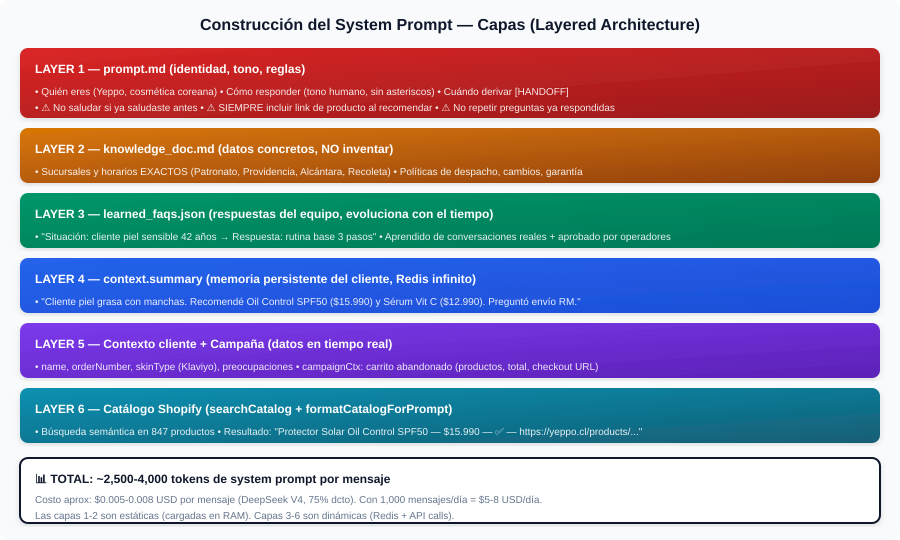
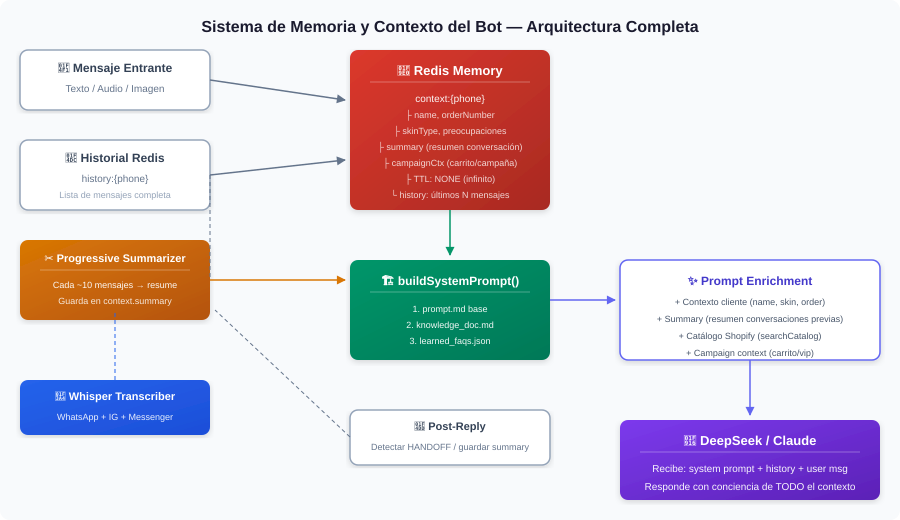
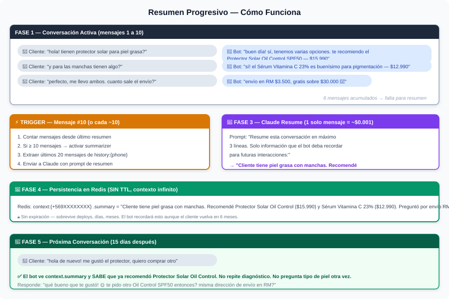
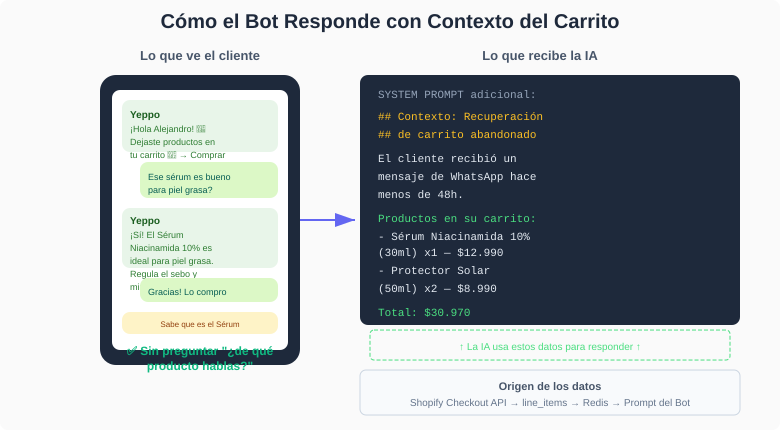
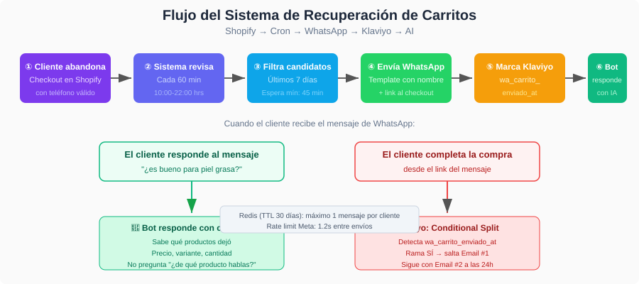

Documentación Softify Bot
Guía completa para instalar, configurar y sacar el máximo provecho a tu chatbot multi-canal para Shopify.
1 Instalación y requisitos
Requisitos previos
- Tienda Shopify activa (cualquier plan)
- Cuenta de WhatsApp Business API (Meta)
- Cuenta de Instagram Business vinculada a tu página de Facebook
- Página de Facebook vinculada a WhatsApp Business
- Cuenta de Klaviyo (opcional, para personalización)
Proceso de instalación
Softify Bot es un servicio gestionado. Nuestro equipo configura la infraestructura, conecta tus canales y ajusta el tono de respuestas a tu marca. El proceso toma 2-3 días hábiles desde la solicitud.
2 Conexión de canales
Softify Bot opera en tres canales simultáneamente:
Canal principal. Soporta mensajes de texto, imágenes, product cards y quick replies. Los mensajes de carrito abandonado se envían por este canal.
Responde mensajes directos, solicitudes y menciones en historias. Detecta mensajes de todas las bandejas (General y Requests) mediante polling cada 15 minutos.
Messenger
Responde mensajes de la página de Facebook. Polling cada 15 minutos para capturar mensajes que no disparan webhook.
3 Sincronización del catálogo Shopify
El bot se sincroniza con tu catálogo de Shopify en tiempo real. Cuando un cliente pregunta por un producto, el bot busca en tu inventario real y responde con:
- Nombre del producto
- Precio actual (incluye precio de oferta si aplica)
- Disponibilidad (en stock / agotado)
- Variantes (talla, color, tamaño)
- Enlace directo al producto
Importante: El bot solo recomienda productos que existen en tu catálogo. Si no encuentra lo que el cliente busca, lo dice directo. Sin alucinaciones.
4 Carritos abandonados
Softify Bot detecta carritos abandonados en Shopify y envía un recordatorio por WhatsApp con:
- Nombre de los productos abandonados
- Precio y disponibilidad
- Enlace directo para completar la compra
Parámetros configurables
| Parámetro | Descripción | Default |
|---|---|---|
| Delay | Minutos de espera tras abandono | 45 min |
| Horario | Ventana de envío | 10:00 - 22:00 |
| Límite diario | Máximo de mensajes por día | 5 |
| Verificación | Revisa si ya compró antes de enviar | Activado |
5 Personalización por cliente (Klaviyo)
Si un cliente comparte su email en Instagram o Messenger, Softify Bot lo cruza automáticamente con Klaviyo y personaliza las respuestas según:
- Tipo de piel (grasa, seca, mixta, normal, sensible)
- Preocupaciones principales (poros, pigmentación, arrugas, acné, etc.)
- Historial de compras en Shopify
Esto permite respuestas como "Vi que tienes piel mixta, esta crema ligera te puede ir mejor que la versión densa" en vez de un copy-paste genérico.
6 Modo campaña
Activa contexto de campaña para que el bot responda con promociones activas. Ideal para:
- Cyber Days (Cyber Junio, Cyber Monday)
- Black Friday
- Lanzamientos de productos
- Fechas especiales (Día de la Madre, Navidad)
El bot inyecta automáticamente el contexto de campaña en cada respuesta, incluyendo descuentos, condiciones y códigos de promoción. Probado con 88 mensajes en Cyber Junio 2026.
7 Handoff a equipo humano
El bot escala automáticamente a tu equipo humano cuando:
- El cliente pide hablar con una persona real
- La consulta es un reclamo o problema complejo
- El bot no puede resolver después de varios intentos
Las alertas llegan por Slack con el contexto completo de la conversación, para que tu equipo retome sin hacer repetir al cliente.
8 Métricas y monitoreo
Todo se monitorea en tiempo real vía Slack:
- Mensajes recibidos y respondidos por canal
- Carritos abandonados detectados y recuperados
- Handoffs a equipo humano
- Errores y excepciones
- Costo de API (tokens utilizados)
9 Arquitectura del sistema
Softify Bot está diseñado con una arquitectura modular multi-tenant que separa memoria, contexto, razonamiento y canales de comunicación.
Capas del Prompt
Cada mensaje pasa por un pipeline de enriquecimiento antes de llegar al motor de respuestas: catálogo Shopify → perfil Klaviyo → contexto de campaña → FAQs aprendidas → respuesta.

Pipeline de enriquecimiento de contexto por mensaje
Sistema de Memoria
Arquitectura de memoria con Redis como backend: contexto de conversación, historial de cliente, flags de estado y caché de catálogo.

Sistema de memoria con Redis para persistencia de contexto
Progressive Summarizer
Las conversaciones largas se resumen progresivamente para mantener contexto sin saturar la ventana de tokens del motor de IA. Conversaciones recientes tienen detalle completo; las antiguas se comprimen.

Resumen progresivo de conversaciones largas
Flujo de Carrito Abandonado
Detección de carritos abandonados vía webhook de Shopify → enriquecimiento con datos de producto → notificación por WhatsApp dentro de ventana horaria configurable.

Contexto inyectado al bot durante recuperación de carrito

Flujo completo desde abandono hasta recuperación o fallback
10
¿El bot responde 24/7?
Sí. En horario hábil responde normalmente. En horario nocturno (23:00 - 08:00) confirma recepción y avisa que responderán en la mañana.
¿Qué pasa si el bot no entiende la pregunta?
Pide más detalles o sugiere al cliente visitar la web de la tienda. Si el cliente insiste, escala al equipo humano.
¿Puedo tener varias tiendas con el mismo sistema?
Sí. Softify Bot usa arquitectura multi-tenant. Cada tienda tiene su propio catálogo, tono y configuración, todo en la misma infraestructura.
¿Se requiere App Review de Meta?
Para WhatsApp sí (Business Verification). Para Instagram y Messenger, Softify Bot usa polling que no requiere permisos adicionales de Meta.